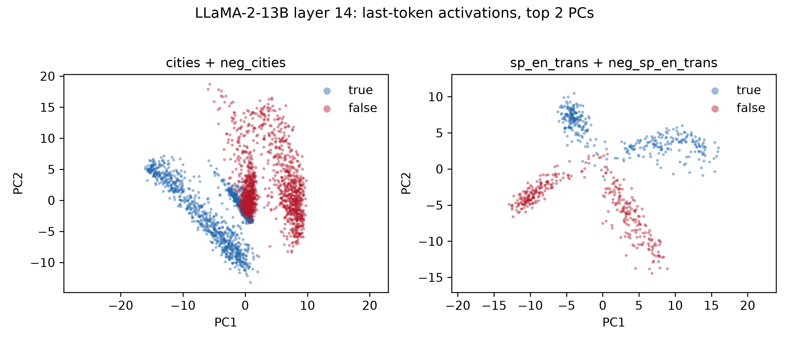

CSI-435/535 · Fall 2026
1 / 12
opening the paper…

Each point = one statement's last-token activation (LLaMA-2-13B, layer 14), top-2 principal components.
PCA never saw the labels.
‹
›
→ next · ← back · S notes · F fullscreen